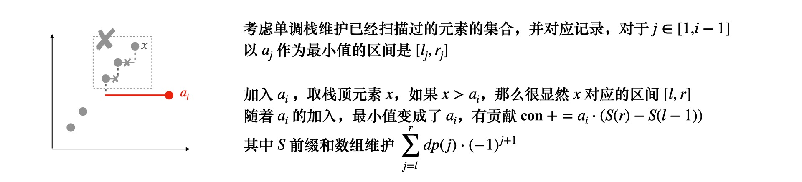
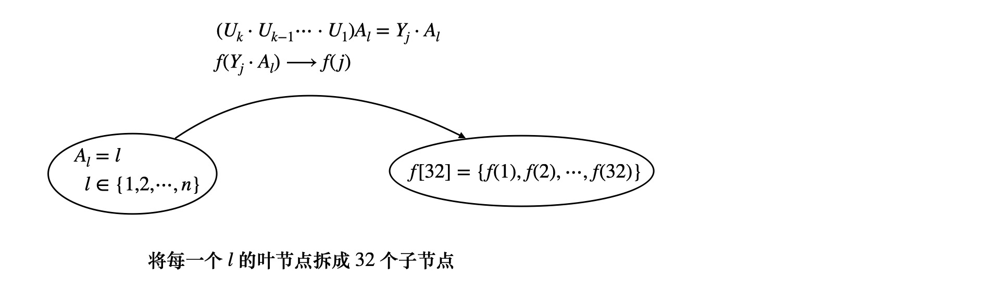
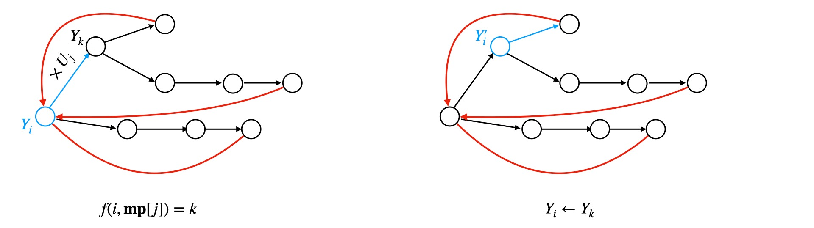

F
Non-equal Neighbours
题目大意，给你一个序列 a1,a2,⋯an，要求你构造出 b1,b2⋯bn
其中 1⩽bi⩽ai，并且 bi=bi−1
问构造的方案数，大数取模
分析
考虑构造 b 数组，对于 b1,b2,b3，那么方案数可以容斥得到
我们假定 bi,bi+1 之间没有限制，如果违背了假定，即 bi=bi+1
那么违背假定的个数记为 cnt，违背假定的条件记为 (P∣bi=bi+1)
最后容斥的结果为
(a1⋅a2⋅a3)+(−1)1(P∣b1=b3)⋅a2+(−1)1(P∣b1=b2)⋅a3+(−1)2(P∣b1=b2=b3)
其中 (P∣bi=bi+1) 的方案数为 min(ai,ai+1)，容斥公式的推导，即看违背了几个假定的条件
i=1∏nai+cnt=1∑n(−1)cnt⋅(P∣bj+1=bj+2=⋯=bj+cnt)
最后三个数的容斥结果为 (a1⋅a2⋅a3)−(min(a1,a2))⋅a3−(min(a1,a3))⋅a2+min(a1,a2,a3)
算法实现
考虑 dp，对于序列 b1,b2,⋯bi−1,bi,⋯bn
对于某个位置 i，dp(i) 表示在 i 位置合法的方案数，对于 j∈[0,i−1]，假设违背了某些条件
此时如果有 (P∣bj+1=bj+2=⋯bi)，那么存在转移
dp(i)=j=0∑i−1dp(j)⋅(−1)i−j−1⋅min{aj+1,aj+2,⋯,ai}
优化dp
大致如上图所示，dp 的过程可以边扫描边维护，不难想到对于 min 的部分用单调栈，实际上 dp 式子整理如下
dp(i)=(−1)i⋅j=0∑i−1(dp(j)⋅(−1)j+1)⋅min{aj+1,aj+2,⋯,ai}
用一个前缀和 SS 维护已经扫描过的集合的和，即上式中的 ∑ 部分，在 i−1→i 的过程中
- 如果 1→i 均为单调增的，那么以 ai 为最小值的区间，只有 i 这一个元素
SS←SS+dp(i−1)⋅(−1)i⋅ai
- 如果不是的话，考虑用单调栈维护单调递增序列，转为考虑加入元素 ai 能够给 SS 增加的贡献是多少
贡献 con 大致是这样的，SS−=(单调栈中⩾ai 的元素的贡献)
然后弹出所有 ⩾ai 的元素，ai 和这些元素也会有贡献，加入到 con 中
然后将 ai 放入单调递增的栈中，转为第一种情况，con 要加上 dp(i−1)⋅(−1)i⋅ai
最后把 con 加入到 SS 中
比较棘手的是单调栈中 ⩾ai 的元素，和 ai 产生的贡献怎么计算？
对于单调栈中的元素 aj，还需要维护以 aj 作为最小值的区间，实际上是 [l,r]←[le(j),j]
这样对于弹出的每个元素 x，以 x 作为最小值的区间是 [x.l,x.r]，随着 ai 的加入
因为 x⩾ai，那么 [x.l,x.r] 这部分就以 ai 作为最小值了
只要维护关于 dp(i−1)⋅(−1)i 的前缀和，那么 con 加上 ai⋅(S(x.r)−S(x.l−1)) 即可
弹出栈的时候，更新 le(i)=x.l，即记 le(i) 为最左边的 ⩾ai 的元素位置

最后把 ai 加入单调栈，同时维护好对应的区间 [le(i),i]
不要忘了 ai 的贡献（图中红色的一部分），还包括了从 dp(i−1)⋅(−1)i⋅ai，即 i 自身的一段
SS←SS+con，这样就维护完成了
D
D. Yet Another Sorting Problem
置换
本例涉及到置换的性质，置换研究的是关于 n 的排列
置换可以写成循环的结构
(1325314452)=(1,3)(2,5)(4)
比如 (1,4,3) 这个循环表示 1→4,4→3,3→1
长度为 2 的循环称为对换，比如 π=(i,j)
置换 π∈Sn 可以写成对换的乘积，比如
(1,2,3)=(1,3)(1,2)=(2,3)(1,3)
置换的符号规定如下
π=τ1τ2⋯τk，其中 τi 为一个对换，置换的符号为 ϵπ=(−1)k
如果 ϵπ=−1，为奇置换，如果 ϵπ=1 为偶置换
置换的循环分解算法
对于 n 的排列，(1,2,3,4,⋯,n)，最初的时候，循环分解为 (1)(2)(3)⋯(n)
置换之后排列如下
(132n31⋯⋯n−14n2)=(1,3)(2,n)⋯(n−1,4)
实际上置换 (a,b)，可以用并查集将 a,b 两个元素所在的集合合并
或者用图论来解决，a→b，连一条有向边 a→b
置换的奇偶性
首先循环分解中，循环的个数称为循环节 cyc
(1,3)(2,5)(4) 的循环节为 3
结论1
关于 n 的排列 (1,2,⋯,n) 的奇偶性，与 ϵ=n−cyc 的奇偶性一致
特别地，如果排列有序，为初始状态 (1,2,⋯,n)，它的循环节为 cyc=n
它的 ϵ=0，为偶排列
结论2
排列 S′=τS，即在 S 基础上，对换两个元素，那么 S′ 和 S 奇偶性相反
结论3
关于 n 的排列 Sn 的奇偶性，还等于 Sn 中逆序对的个数
题解
有了以上结论之后，本例就简单了
首先，如果给出的序列是关于 n 的排列，那么先算出其奇偶性 ϵ
因为题中给出的置换是 (a,b,c)=(a,b)(b,c)，它是一个偶置换
也就是说，如果答案为 yes，那么给出的排列的奇偶性，和最终我们要的排列
即 (1,2,⋯,n) 的奇偶性要一致，(1,2,⋯,n) 是一个偶排列
所以当且仅当 ϵ 为偶数的时候，才可行
如果不是关于 n 的排列，由于 1⩽ai⩽n，那就意味着 a 中有两个相同元素
将其应用置换 π 变为升序排列之后，如果为奇排列，那么可以将 π←τπ
即对于相同的元素，应用一次对换，这样奇排列总是可以转换成偶排列
所以非 n 的排列，答案一定是 yes
E
Frequency Queries
题目大意
给定一棵树，每一个点 v 有权值 a(v)，给定问询 (v,l,k)，对于每个问询
- 将 v→root 路径上的所有数权值写出来，{a(v1),a(v2),⋯,a(root)} 构成一个序列
- 计算这个序列中每个元素出现的次数 cnt[a(v)]，将出现次数 ⩽l 的元素移除
- 删除冗余元素，并且将序列按出现次数升序排列，求出现次数第 k 大的数，返回相应的 a(v)
如果序列长度 <k，返回 −1
考虑离线，将询问 (v,l,k) 挂载到相应的点 v 上
在 dfs(u) 的时候，可以维护出从 root→u 的每一个点 v 的权值 a(v) 出现次数
记为 cnt[a(v)]，具体来说，遍历到 u 时，cnt[a(u)]++，回溯时 cnt[a(u)]−−
不难想到用树状数组，回答第 k 大，此外我们还要用一个 set， num 来支持插入，删除操作
遍历到某个点 u，维护 num[cnt[a(u)]]={a(k1),a(k2),⋯}
表示出现次数为 cnt[a(u)] 的权值有哪些
dfs 到 u 的时候，具体要做几件事情
- 首先 cnt[a(u)] 肯定是要 +1 的，但是在增加之前，要在树状数组上执行 (cnt[a(u)],−1) 操作
因为你 cnt[a(u)]+1 之后，原来出现次数为 cnt[a(u)] 的数的个数就 −1 了（前提是原来的 cnt[a(u)]>0）
与此同时记得在 num[cnt[a(u)]] 中 erase 掉 a(u)
- 然后执行 cnt[a(u)]+=1，表示出现次数为 cnt 的数的个数多了 1
树状数组维护 (cnt[a(u)],1)，并且 num[cnt[a(u)]] 中 insert a(u)
- 接着就看看 u 这个节点有没有挂载询问，有就可以回答问询了
- 递归 u 的子节点之后，回溯，并还原现场
还原现场的时候先在树状数组执行 (cnt[a(u)],−1)，并且在 num[cnt[a(u)]] 中 erase 掉 a(u)
然后 cnt[a(u)]−=1，如果 cnt[a(u)]>0，要在树状数组和 num 中同步把 cnt[a(u)] 给加回来
回答问询的过程，实际上是树状数组二分
删除 ⩽l 后的第 k 个元素，实际上是问询，在不删除的条件下
⩽l−1 的元素有 k0 个，在树状数组中二分查找第 k0+k 大的元素，得到这个元素的下标 x
即可回答，第 k0+k 大的元素，它的出现次数为 x，此时输出集合 num[x] 中任意一个元素即可
当然 k0+k>n 的话就无解
树状数组二分查找 ⩾x 的数逻辑如下
一开始令 p=0， j 从 lgN→0 遍历每一层，此时树状数组的长条为 (p,p+2j]
检查树状数组对应的长条 C[p+2j]，如果 p+2j⩽n 并且 C[p+2j]<x
那么接下来要在右子树中查找 x−=C[p+2j] 大的数，再令 p←p+2j
最后返回 p 即可
一些杂题
魔数-第十八次CSP认证
这个问题一看没有什么思路，但区间修改不难想到线段树，相邻的两次操作如下
(Ui⋅Uj)modP，考虑打表，每出现一个新的数就新开一个状态编码，打表之后
idx=32，也就是说，在模 P 意义下
一个数 x 乘以 {U0,U1,⋯U4} 中的任意一个，乘以若干次，最终只会有 32 种不同的结果，记为 Y[32]
若干次 ×Ui 的操作，等价于 x×Y[j],j∈[1,32]
基于此，可以用类似有限状态自动机模型，来构造线段树区间修改，修改等价于状态转移

- 维护转移矩阵，g(i,j)=k 表示 Yi×Uj→Yk，即编码为 i 的数乘以 Uj 之后
转移到编码为 k 的数，其中 i∈[1,32],j∈[0,5)，为了转移方便和统一，可以都用编码 mp 表示
Yi×Uj=Yk，需要维护 g(i,mp[Uj])=k
- 线段树的叶子结点，一开始的时候的 f 值是 f(Al)=(lmodP)mod2019
题中需要问询执行若干次 Al×Uj=Al′ 之后的 l∑f(Al′)，根据前面的分析
对于每个 l，Al′ 只有 32 种不同的取值，预处理为 Y[1⋯32]，所以考虑拆点
将每个叶子结点拆成 32 个不同的子节点，对于每个 Al，可以预处理出 f(l,j),j=[1⋯32]
f(l,j)=((l⋅Yj)modP)mod2019，这里可以优化，不必要每个都执行乘法
因为 l∈[1,n]，可以递推，对每一个 Yj,j∈[1,32]，(l⋅Yj)modP=((l−1)⋅Yj+Yj)modP
用一个 res 记录一下 (l⋅Yj)modP，递推求解就可以
- 特别地，f(l,0) 表示对叶子结点不做任何修改，f(l,0)=Al
有了叶子结点之后，考虑 pull 操作，线段树结点维护 f 值，不妨设当前结点为 [l,r]
相应的值被修改为 [Al′,Al+1′,⋯,Ar′]，结点 f 值即维护 i=1∑rf(Ai′)
pull 的时候只要把子区间对应的 f[j],j∈[0,32] 相加就可以

对于每一次操作，先考虑区间修改 upd(l,r,k)，即 ×Uk 的操作
难点在于，区间 [l,r] 的子区间可能处于不同的状态 {sta1,sta2,sta3,⋯}，在 pull 的时候怎么合并？
当一个区间 ×Uk 发生状态转移的时候，很可能子区间对应 {g(sta1,k),g(sta2,k),⋯} 多个状态同步转移
所以转移的时候，32 个状态要同时转移
∀p∈[1,32],g(ip,mp[Uk])=jp，有 f(i1,i2,⋯,i32)⟶f′(j1,j2,⋯,j32)
pull 的时候子区间对应的 32 位，挨个对应合并即可，这样假设区间乘以若干个 Uk 之后，等价于 ×Ys
此时如果子区间之前已经被修改过了，因为 pull 操作的存在，子区间和当前区间的 Ys 已经被更新成修改后的值
我们问询 f′(s)←f(g(s,k))，它对应转移后的结果
另外，如何回答 i∈[l,r] 区间的 s=∑f(Ai)，那要注意到另外一个很重要的性质
因为本例对应的状态是有限的，仅有 32 种，所以一定存在这样的转移
Al×(Up1⋅Up2⋯Upk)→Al，即 Ys=Up1⋅Up2⋯Upk=1，s 为不动点
（否则的话状态应该是无限的）
也就是说 g(i,s)=i，初始化时候一定有 Al⋅Ys=Al，f(s) 这个状态表示区间映射到自身
这样只要打表找到 Ys=1 的下标 s， f(s) 就表示区间和，经过若干次修改之后、
f(s) 也会被更新为修改为 A′ 之后的区间 ∑f(Ai′)
那么这个问题大致就解决了，具体来说，执行 upd(l,r,k) 操作的时候，找到对应的区间结点 p
将 p 的状态向量 f 更新为 f′，具体来说，∀i∈[1,32],f′(i)⟵f(g(i,mp[Uk]))
同时打标记，如果 tag=0，那么 tag=mp[Uk]，否则，tag←g(tag,mp[Uk])
延迟标记维护区间发生的一系列 ×(Up1⋅Up2⋯Upk) 的累计状态转移，push 的时候
记录当前区间的 tag，如果子区间的 tag′=0，那么 tag′=tag，否则 tag′=g(tag′,tag)，然后清空当前区间的 tag
问询区间 sum 的时候，直接找到不动点 s 并返回 f(s)
特别地，有些情形下，这种转移没有不动点，需要手动构造
构造的方法也很简单，预处理以及初始化线段树的时候，令 ∀l∈[1,n], f(l,0)=Al
线段树维护 f 值，f(0) 表示区间没有任何转移的时候的 sum 值
构造转移矩阵，∀i∈[1,32], g(0,i)=i，这样 upd(l,r,k) 的时候，就可以转移 f 了
f′(0)⟵f(g(0,mp[Uk]))，查询区间和的时候，返回修改后的 f′(0) 即可
但是本例不能这样做，是因为 s=28 是不动点，即 28 这个状态，对应 f(28) 将区间映射为它自己
本例中的修改，可能存在其他状态转移到 s=28，我们的 f(28) 要加上这部分贡献才能得到正确的结果
如果手动构造 f(0) 为不动点，原问题不存在从其他状态向 0 状态的转移，会漏掉一部分解
 微信
微信 支付宝
支付宝